A playlist you can wander through
Thank you for keeping this music on the air. In gratitude, we put together twelve recordings from our archive, paired with Afropop articles, radio programs, and listening notes — for whenever you want to stay a little longer.
The complete set is yours to keep — a lossless download, straight from our shelves. Streaming services don't carry every one of these recordings, so the guide below stays centered on the originals.
The listening room
Some stops open into Afropop articles and radio programs drawn from four decades of reporting. Others stay intentionally spare — we let the recording speak for itself.
-
01
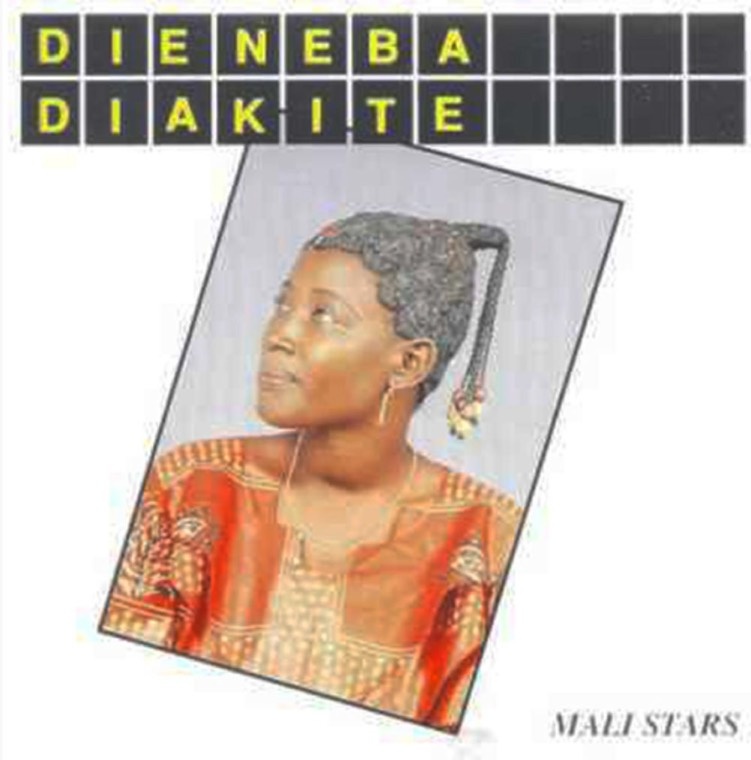
Dugu Kamelmba
Djeneba DiakiteA Mali Stars-era thread connected to Wassoulou singer Dieneba Diakite in Afropop's Afro-Paris photo essay.
-
02
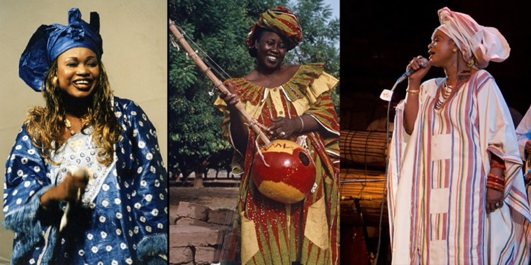
Adebola
Related reading on Wassoulou voices and the wider Malian tradition around this file.
-
03
Rail Band
Rehearsal, 1993Afropop's Mali archive connects the Super Rail Band to Bamako, Mory Kante, and Salif Keita's orbit.
-
04
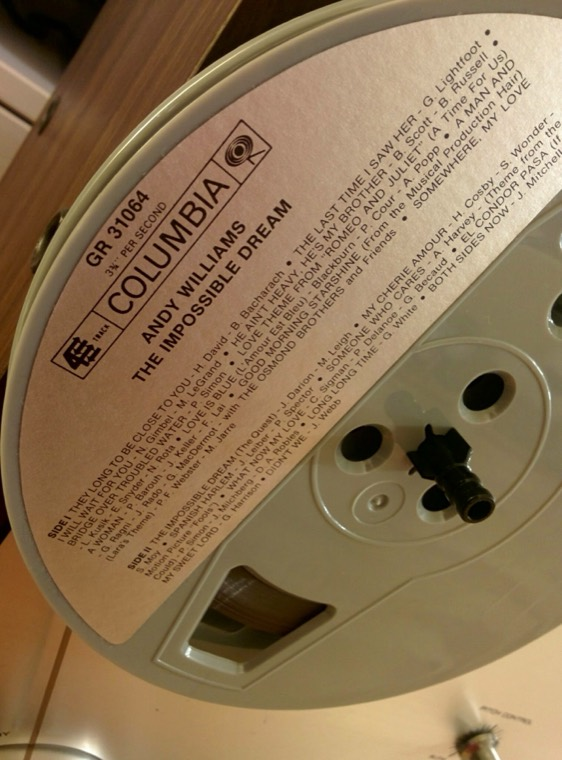
Rumbanella
Masanga / Bibi TheresaA rare archive selection, left close to the way it arrived: voice, rhythm, and room tone carrying the story.
Archive selection -
05
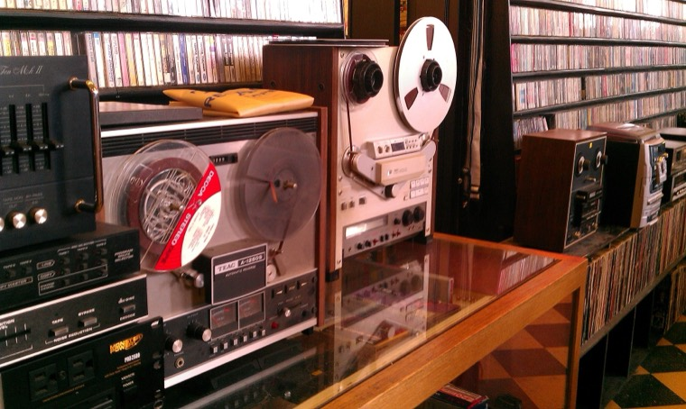
Rumbanella
Zam SwingA companion Rumbanella cut from the same archive grouping, held here as a second doorway into the set.
Archive selection -
06
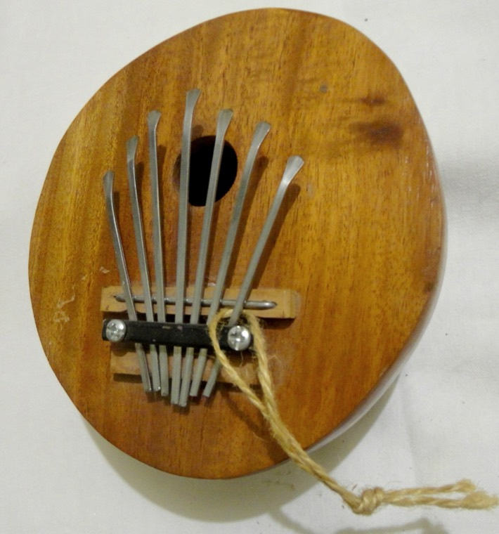
John Ngwandangwanda Mugariro
Archive fileA field-recording-style stop where the file credit does the introducing and the performance carries the rest.
Archive selection -
07
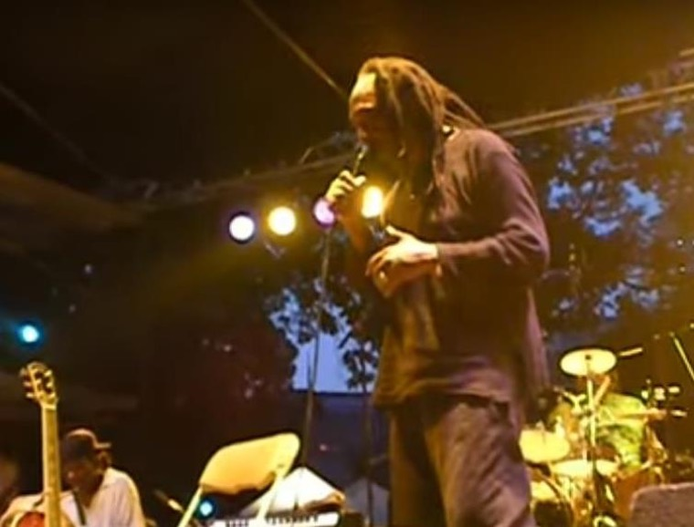
Thomas Mapfumo
Nyoka MusangoA deep Afropop trail: live recordings, war-years context, and the exile story around Zimbabwe's chimurenga giant.
-
08
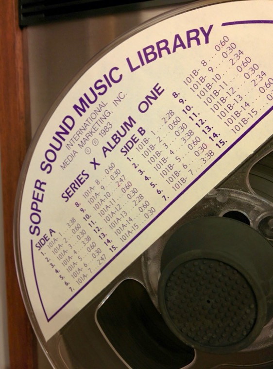
Kava Unga Heti
GermansA compact archive cut, presented as a listening-room moment rather than a footnoted article.
Archive selection -
09
Khaled
Liberte, live at OlympiaKhaled opens into an Afropop interview and the wider rai story around his voice and perspective.
-
10
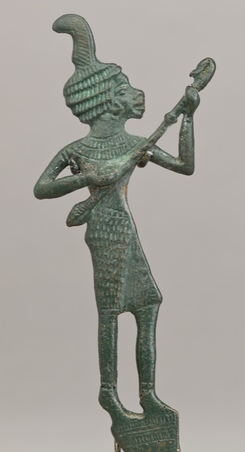
Nuba Noor
Wao Nuba NumuAfropop's Living Traditions feature names Nuba Noor in a section on Sudanese echoes and Nubian culture.
-
11
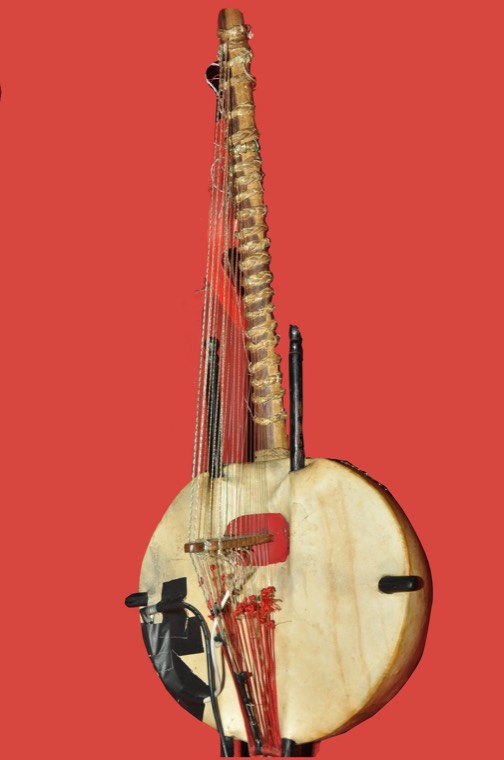
Yayi Kanoute
JeliyaA jeliya-rooted archive selection, placed here as a quiet listening stop before the full download.
Archive selection -
12
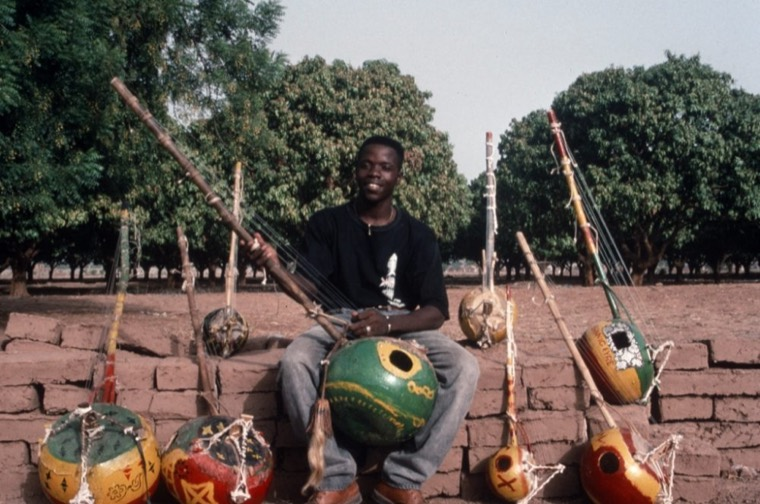
Coumba Sidibe
Related Afropop context points toward Coumba Sidibe's Wassoulou legacy and Abdoulaye Alhassane Toure's Songhai world.
Take the whole archive home first, then return to these notes whenever you'd like to listen more slowly. They'll be here — and so will we.
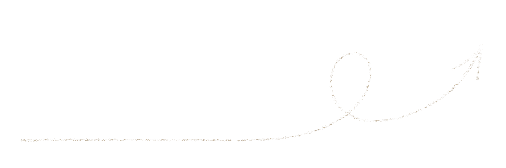